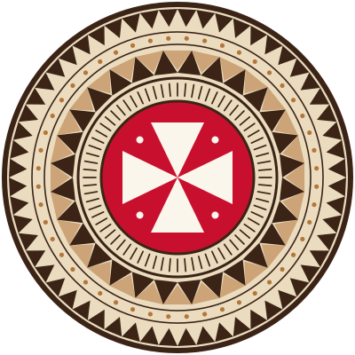

Participants
Délégations, artistes et artisans
Découvrez celles et ceux qui feront vivre MINIFAPO 2026 : les délégations des trois royaumes du Territoire et les délégations invitées du Pacifique.

Liste provisoire. Les délégations invitées sont en cours de confirmation. Cette page est mise à jour au fil des annonces.
Filtrer
9 participants
-
Délégation hôte
Royaume d’Uvea · Wallis
Uvea
Chants et danses traditionnels, dont le kailao, et savoir-faire du tapa et du tressage.
-
Délégation hôte
Royaume d’Alo · Futuna et Alofi
Alo
Danses, chants et artisanat de l’est de Futuna et de l’île d’Alofi.
-
Délégation hôte
Royaume de Sigave · Futuna
Sigave
Danses, chants et savoir-faire de l’ouest de Futuna.
-
À confirmer
Délégation invitée
Nouvelle-Calédonie
Danse, musique et arts visuels, avec des artistes de la communauté wallisienne et futunienne de Nouvelle-Calédonie.
-
À confirmer
Délégation invitée
Polynésie française
Danse (’ori tahiti), percussions et artisanat.
-
À confirmer
Délégation invitée
Fidji
Danses (meke), chants et artisanat.
-
À confirmer
Délégation invitée
Samoa
Danses (siva), chants et tatouage traditionnel.
-
À confirmer
Délégation invitée
Tonga
Danses (lakalaka, kailao), chants et tapa (ngatu).
-
À confirmer
Délégation invitée
Tuvalu
Danses (fatele) et chants.
Aucun participant ne correspond à ce filtre pour le moment.
Participer
Vous souhaitez vous produire au festival ?
Troupes, chorales, artistes, artisans, associations : le comité étudie toutes les propositions en lien avec les cultures du Pacifique.
-
Envoyez votre proposition
Présentez votre groupe ou votre travail, votre discipline et vos besoins techniques via le formulaire de contact.
-
Échangez avec la programmation
L’équipe revient vers vous pour préciser le format, les horaires et les conditions d’accueil.
-
Préparez votre venue
Une fois votre participation confirmée, nous vous accompagnons pour le voyage et l’hébergement.